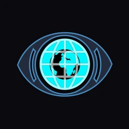

01
Suivre l'avion qui passe au-dessus de chez toi
Tu cliques dessus : la caméra s'accroche, sa trace se dessine et ses informations s'affichent. Un clic de plus et tu es dans son cockpit.
Clic sur l'avion→Trace + infos→Cockpit

Les avions, les bateaux et les satellites de la planète en direct, sur un globe 3D dans ton navigateur. Le mode d'emploi en français.

God's Eye View est une appli web que tu fais tourner sur ton ordinateur : elle va chercher des données publiques (vols, navires, satellites, séismes, incendies, météo, caméras publiques…) et les pose sur un globe 3D que tu ouvres dans ton navigateur, à l'adresse localhost:4173. La base marche sans compte et sans clé. Trois façons de l'installer :
Le plus simple, sans terminal : installe Pinokio 8.2 ou plus récent (Windows, macOS ou Linux), ouvre la page God's Eye View dans Pinokio, puis Install et Start.
Le plus simpleTu clones le dépôt et tu lances docker compose up, puis tu ouvres localhost:4173. Le serveur MCP (pour les agents IA) et la connexion vocale via ChatGPT ne marchent pas dans Docker.
Pris en chargePour les développeurs : Node.js 24 (24.14 ou plus) ou 26, puis npm ci, npm run doctor et npm run dev. Prends une version récente de Node : les correctifs de sécurité d'octobre 2026 sont dans 24.22.1+ et 26.12.1+.
Pour les curieuxTu cliques dessus : la caméra s'accroche, sa trace se dessine et ses informations s'affichent. Un clic de plus et tu es dans son cockpit.
Demande-le à la voix (ou par écrit) : l'heure du lever, du point le plus haut, du coucher, et si elle sera visible.
Active le vent, le radar de pluie, les nuages et les éclairs sur une même frise, et suis la trajectoire des cyclones avec leur cône de prévision.
Avec une clé AISStream gratuite, les navires apparaissent en direct ; clique sur l'un d'eux pour le suivre ou passer à la caméra publique la plus proche.
En serveur MCP, Claude Desktop, Codex ou ChatGPT peuvent ouvrir un lieu sur le globe, l'interroger et y poser leurs annotations.
Un projet énorme et mis à jour chaque jour, qui garde tes clés chez toi. Il est encore en version 0.3 et une version hébergée payante se prépare.
Plus de 3 300 modifications, dernière mise à jour le 23 novembre 2026, version 0.3.0 le 28 octobre 2026.
Plus de 66 000 étoiles et 13 000 copies (forks), plus de 100 contributeurs, n°1 de GitHub Trending.
Tourne en local, clés gardées sur ta machine, voix avec jetons de courte durée. Les requêtes partent quand même vers les fournisseurs de données.
Code sous licence MIT, mais nom déposé et version hébergée en préparation par la société Halfpixel.
Code ouvert en août 2026, version 0.3, plus de 400 tickets ouverts ; données parfois estimées ou en retard.
Comment on note : 5 critères notés sur 5, vérifiés sur GitHub, dans le README et dans DATA_SOURCES.md le 23 novembre 2026. La note sur 10 est la moyenne ramenée sur 10.
Bon pour : Tout voir sur un seul globe : avions, bateaux, satellites, météo
Bon pour : Les avions seulement, avec historique et alertes
Bon pour : Les bateaux seulement, avec suivi de flotte
Bon pour : Explorer la planète en 3D, sans données en direct
God's Eye View n'est pas fait pour un usage réel : pour un vol à attraper ou un bateau à suivre de près, vérifie toujours auprès de la source officielle.

Chaque vidéo RepoPop t'explique un dépôt GitHub utile en moins d'une minute, avec son kit comme celui-ci.